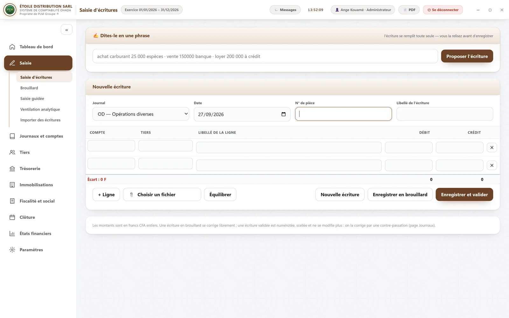
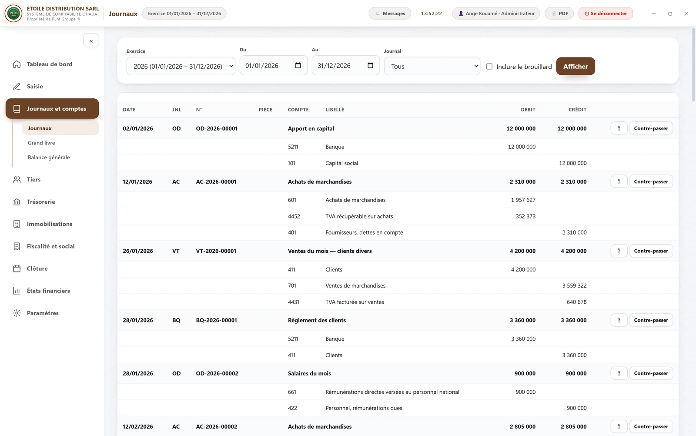
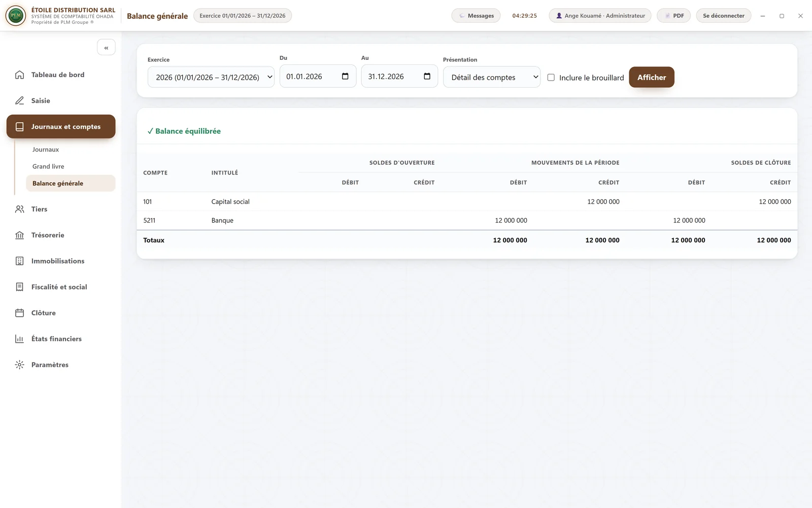
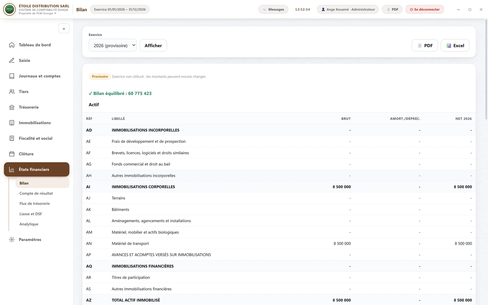
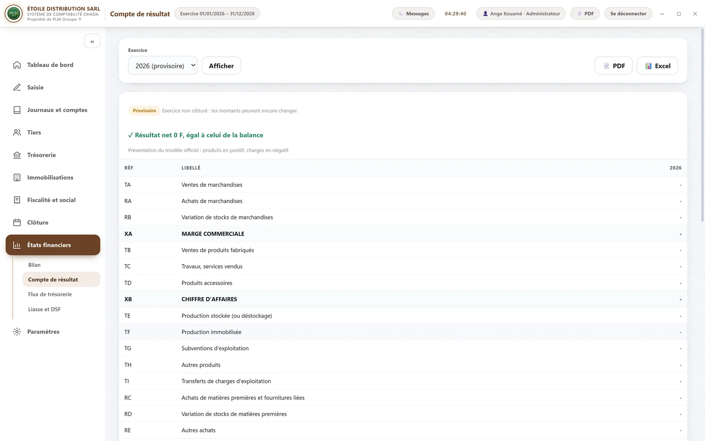

SYSCOHADA révisé, système normal — tenue complète.
Journaux, grand livre, balance, lettrage, immobilisations, TVA et états financiers : la comptabilité de la PME, écrite pour son comptable.
815 000 F 690 000 F −15 % achat unique, sans abonnement
· 30 000 F par poste supplémentaire
Offre de lancementRemise de 15 % sur les neuf logiciels, jusqu’au 31 décembre 2026.
Écritures en partie double contrôlée, validées et scellées
Lettrage, rapprochement bancaire, immobilisations et clôture
Bilan, compte de résultat, TVA et DSF au format attendu
Ce sont des captures du logiciel, avec des données de démonstration — aucun dessin, aucune retouche.




